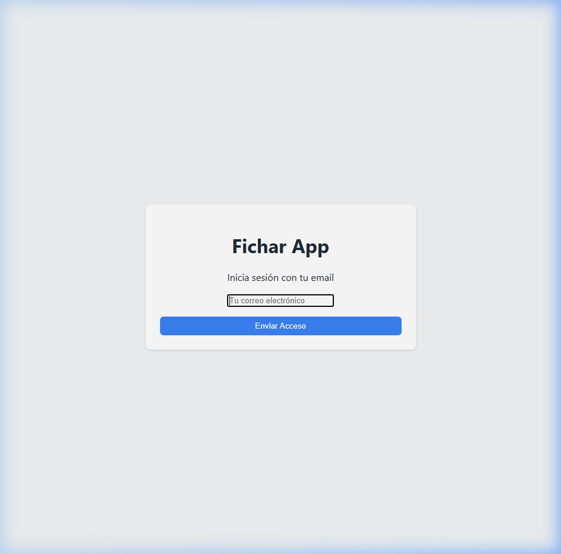
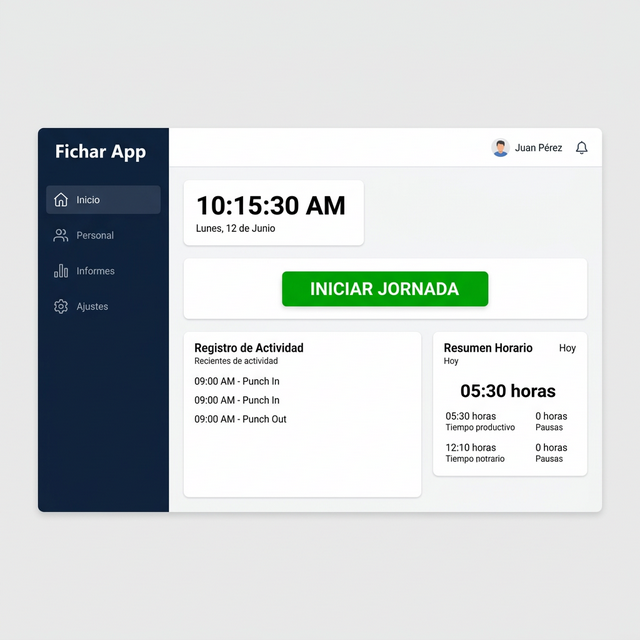
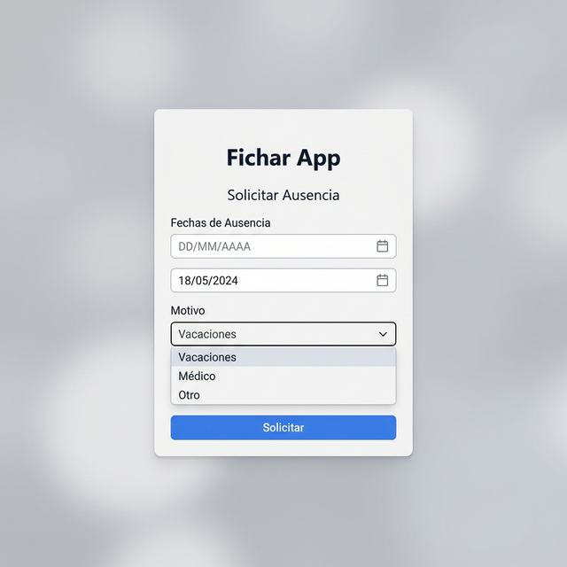
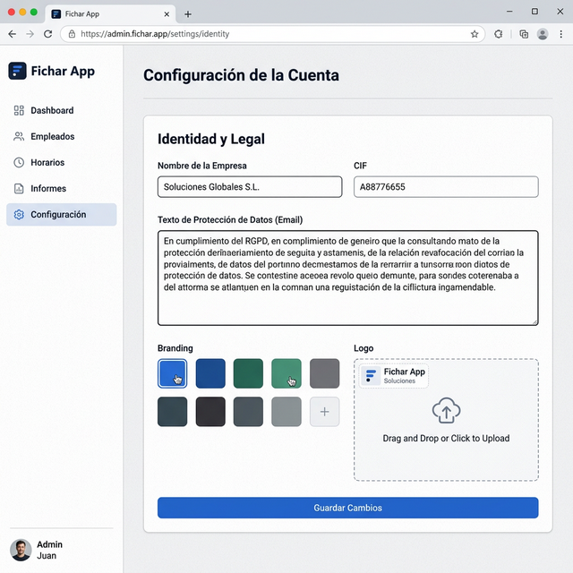
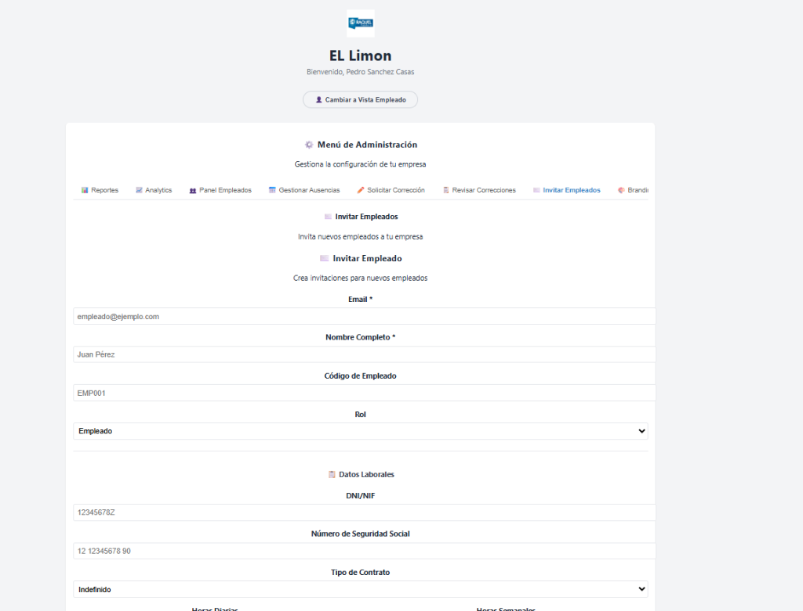
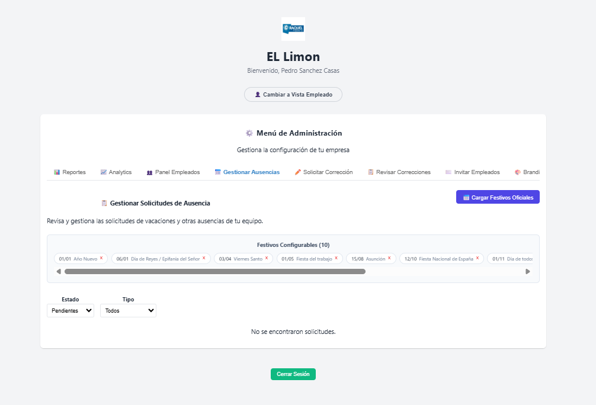
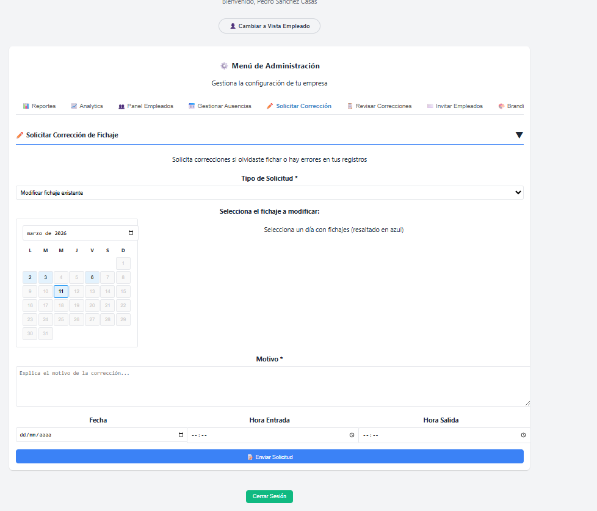
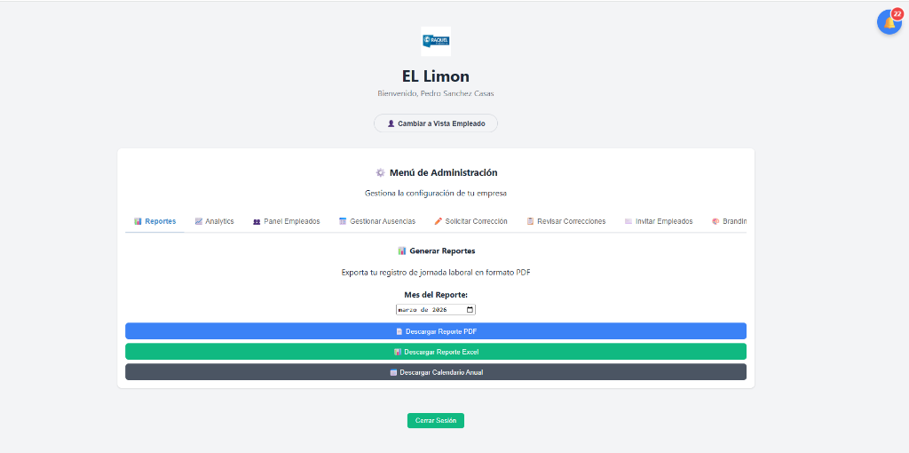
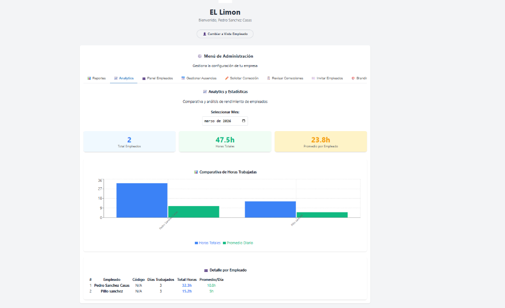

Bienvenido a AppFichar
AppFichar es una plataforma integral diseñada para facilitar el cumplimiento de la normativa de registro de jornada (Art. 34.9 ET) de forma sencilla, moderna y eficiente.
Primeros Pasos del Empleado
Antes de empezar a registrar su jornada, deberá completar su proceso de alta en la plataforma.
Recibir la Invitación
Recibirá un correo electrónico de AppFichar con un enlace de acceso directo. No es necesario recordar contraseñas complicadas.
Completar su Perfil
Al acceder por primera vez, verifique que su nombre, DNI y correo electrónico son correctos. Estos datos son obligatorios para la validez legal del registro.

Ejemplo de la pantalla de inicio de sesión con Magic Link.
Control de Jornada Diaria
El registro de jornada es una obligación legal y debe realizarse en tiempo real al inicio y fin de cada turno.
Cómo Fichar
En el panel principal, pulse el botón "Entrar" al iniciar su trabajo. El sistema registrará la hora exacta.
Al terminar su jornada, no olvide pulsar "Salir" para cerrar el registro del día.

Vista principal del empleado con los botones de control de jornada.
Gestión de Pausas
Las pausas (comidas, descansos, etc.) deben registrarse para calcular correctamente las horas efectivas de trabajo.
- Pulse "Iniciar Descanso" para detener el contador.
- Pulse "Reanudar" cuando termine su descanso para volver a computar tiempo de trabajo.
Ausencias y Vacaciones
Desde la pestaña de "Ausencias", puede solicitar periodos de vacaciones o informar de bajas médicas.

Formulario para solicitar vacaciones y ausencias justificadas.
Seleccione las fechas, el tipo de ausencia (Vacaciones, Médico, Asuntos Propios) y adjunte un justificante si es necesario. Su administrador recibirá una notificación para aprobarla.
Solicitud de Correcciones
Si olvidó fichar o cometió un error en una hora registrada, puede solicitar una corrección.
Configuración Inicial del Tenant
Como administrador, usted es el responsable de configurar el entorno de trabajo para su empresa.
Datos Legales
Acceda a Configuración > Branding para establecer el Nombre Legal, CIF y dirección de la empresa. Estos datos aparecerán en los informes oficiales.
Personalización y LOPD
Mantenga la identidad corporativa y cumpla con la protección de datos.
Identidad Visual
Suba el logotipo de su empresa y elija los colores corporativos para que los empleados se sientan en su propio entorno.
Protección de Datos (Nuevo)
En el campo "Texto de Protección de Datos (Email)", introduzca el aviso legal (LOPD) de su empresa. Este texto se incluirá automáticamente en el pie de todos los correos enviados por la plataforma.

Sección de configuración donde se personaliza el texto legal para los emails.
Gestión de Empleados e Invitaciones
Invite y gestione a su equipo desde la pestaña "Invitar Empleados".

Formulario para enviar invitaciones a nuevos miembros del equipo.
- Invitar: Introduzca el email, nombre, DNI y número de seguridad social.
- Roles: Asigne roles de Empleado, Manager o Admin.
Gestión de Ausencias y Correcciones
La plataforma permite una gestión centralizada de todas las solicitudes.

Panel de gestión de ausencias y festivos configurables.
Panel de Correcciones
Revise las solicitudes de cambio de horario de sus empleados. Puede ver el detalle completo antes de aprobar.

Detalle de una solicitud de corrección de fichaje.
Informes y Analítica
Genere documentación válida para inspecciones de trabajo y analice el rendimiento.

Herramienta para exportar informes mensuales en PDF y Excel.

Panel de estadísticas comparativas de horas trabajadas por empleado.
Suscripción y Pagos
Gestione su plan desde el panel de facturación.
- Mantenga sus datos de pago actualizados para evitar suspensiones.
- Descargue sus facturas en PDF directamente desde la sección de pagos.
- Cambie de plan según el crecimiento de su plantilla.